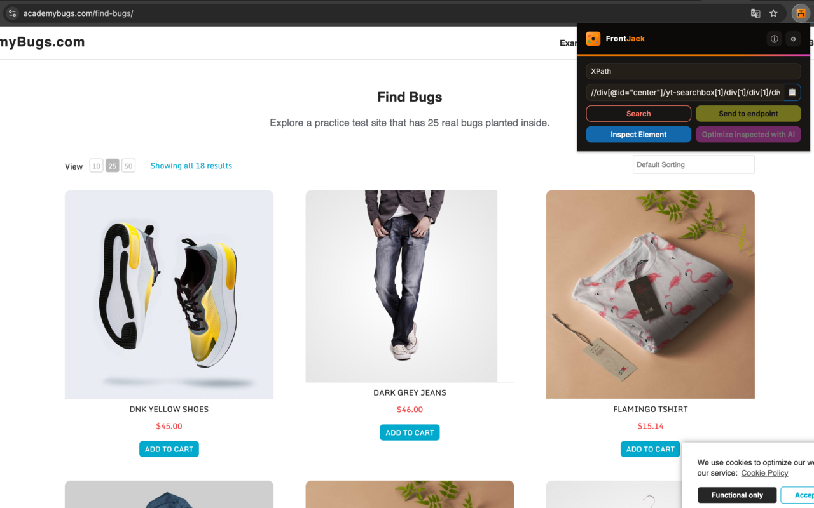
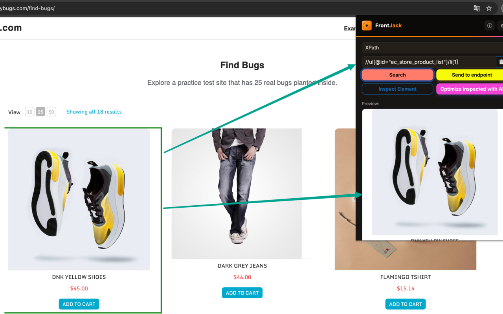
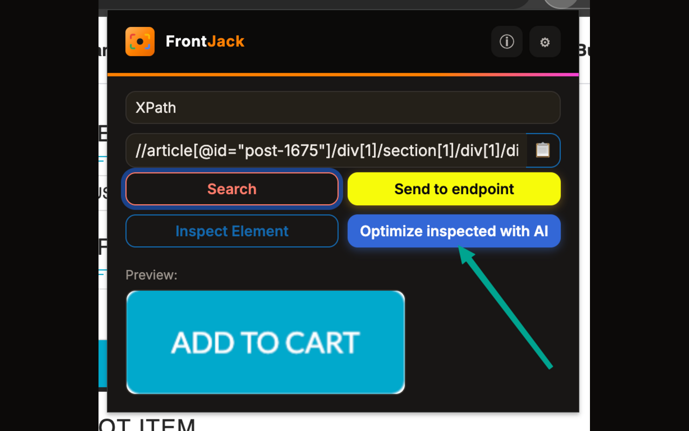
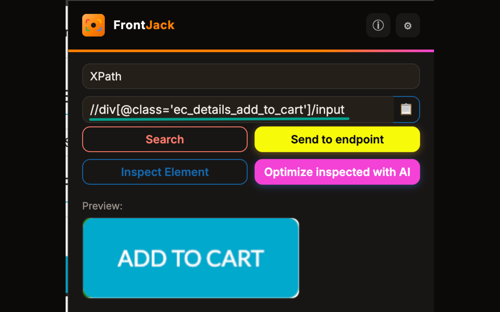
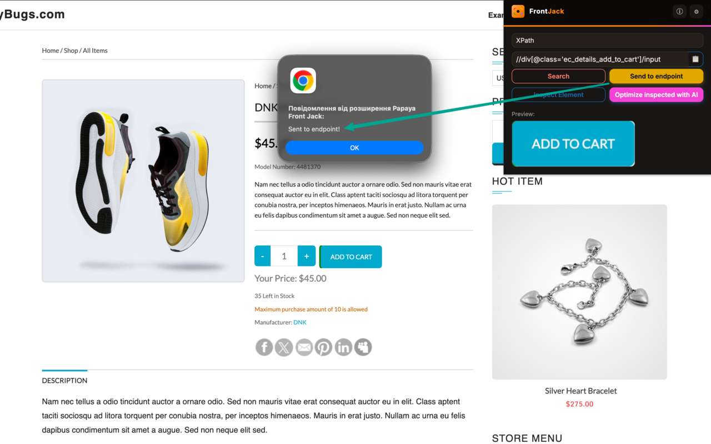

Papaya Front Jack
$ chrome-extension --collect elements --optimize ai
A Chrome extension that collects element data — a selector plus a screenshot — and packages it as JSON
for a companion automation tool. Inspect any element on a page, get a stable CSS or XPath selector,
optionally refine it with AI, and send it straight into a test automation pipeline.
Manifest V3
Chrome Extension
AI-Assisted Selectors
CSS & XPath
What it does
Built for QA / SDET engineers building a page-object or element library
🎯
Inspect & generate
Click any element on a page — get a stable CSS or XPath selector, skipping dynamic auto-generated classes and IDs.
🤖
AI-optimize
Refine a selector using your own API key — Claude, ChatGPT, DeepSeek, or GitHub Models.
📸
Visual preview
Every match is highlighted on the page and cropped into a screenshot preview before you send it anywhere.
📤
Send to your pipeline
Selector, type, and screenshot POST straight to a local endpoint — build an elements hub in your own automation project.
In action
Real screenshots, real practice site (academybugs.com)

Overview — the full toolset: Search, Send to endpoint, Inspect Element, and AI optimization.

Search & highlight — a matched element is outlined on the page and cropped into the preview panel.

AI optimize — refine an existing selector for stability using your chosen AI provider.

Selector detail — precise CSS/XPath targeting down to a single button.

Send to endpoint — the selector, type, and screenshot land in your automation project.
Endpoint payload
What "Send to endpoint" actually POSTs
{
"selector": "string — the CSS or XPath selector",
"selectorType": "css" | "xpath",
"image": "string — base64 PNG of the cropped element"
}
Sent to whatever URL is configured in Settings — nothing here goes to the extension developer.
Built with
Manifest V3
Vanilla JS
Bootstrap 5
chrome.scripting
chrome.storage
Anthropic API
OpenAI API
DeepSeek API
GitHub Models